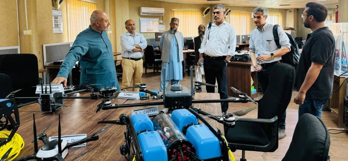

Department Life
Upcoming Events & Highlights



4 years of study — Building strong foundations in hardware, software, and systems engineering.
2 years of study — Advanced coursework in computing systems, networks, and embedded design.
2 years of study — Specialization in machine learning, deep learning, and intelligent systems.
3 years of research — Original research contributions to computing, architecture, and systems science.
Access departmental management tools, virtual labs, and automated portals for students and faculty members.
Retrieve official documents, timetables, code of conduct guides, registration forms, and research records.
CPED is committed to produce graduates having solid foundation of computing systems design & development, and strong professional practices to adopt rapidly changing social and technological trends.
Graduates of the Computer Engineering Program are expected to achieve the following educational objectives within a few years of graduation:
Demonstrate growth in careers related to Computer Engineering through in-depth knowledge and skills.
Collaborate and communicate within a team to solve real-world problems.
Maintain professional integrity and dedication to social and ethical responsibilities.
Engage in continuous learning, innovation, and entrepreneurship.
An ability to apply knowledge of mathematics, science, engineering fundamentals and an engineering specialization to the solution of complex engineering problems.
An ability to identify, formulate, research literature, and analyse complex engineering problems reaching substantiated conclusions using first principles of mathematics, natural sciences and engineering sciences.
An ability to design solutions for complex engineering problems and design systems, components or processes that meet specified needs with appropriate consideration for public health and safety, cultural, societal, and environmental considerations.
An ability to investigate complex engineering problems in a methodical way, including literature survey, design and conduct of experiments, analysis and interpretation of experimental data, and synthesis of information to derive valid conclusions.
An ability to create, select and apply appropriate techniques, resources, and modern engineering and IT tools, including prediction and modelling, to complex engineering activities, with an understanding of the limitations.
An ability to apply reasoning informed by contextual knowledge to assess societal, health, safety, legal and cultural issues and the consequent responsibilities relevant to professional engineering practice and solutions to complex engineering problems.
An ability to understand the impact of professional engineering solutions in societal and environmental contexts and demonstrate knowledge of and need for sustainable development.
Apply ethical principles and commit to professional ethics and responsibilities and norms of engineering practice.
An ability to work effectively, as an individual or in a team, on multifaceted and /or multidisciplinary settings.
An ability to communicate effectively, orally as well as in writing, on complex engineering activities with the engineering community and with society at large, such as being able to comprehend and write effective reports and design documentation, make effective presentations, and give and receive clear instructions.
An ability to demonstrate management skills and apply engineering principles to one’s own work, as a member and/or leader in a team, to manage projects in a multidisciplinary environment.
An ability to recognize importance of and pursue lifelong learning in the broader context of innovation and technological developments.
Apply knowledge of mathematics, natural science, engineering fundamentals and Engineering specialization to the solution of complex engineering problems (WK1-WK4).
Identify, formulate, conduct research literature, and analyze complex Engineering problems reaching substantiated conclusions using first principles of mathematics, natural sciences and engineering sciences (WK1-WK4).
An ability to design solutions for complex engineering problems and design systems, components or processes that meet specified needs with appropriate consideration for public health and safety, cultural, societal, and environmental considerations (WK-5).
Conduct investigation of complex Engineering problems using research-based knowledge and research methods, including design of experiments, analysis and interpretation of data, and synthesis of information to provide valid conclusions (WK-8).
Create, select and apply appropriate techniques, resources, and modern engineering and IT tools, including prediction and modeling, to complex Engineering problems, with an understanding of the limitations (WK-2 and WK-6).
Analyze and evaluate sustainable development impacts to society, the economy, sustainability, health and safety, legal frameworks, and the environment while solving complex engineering problems (WK-1, WK-5, and WK-7).
Apply ethical principles and commit to professional ethics and norms of engineering practice, and adhere to relevant national and international laws. Demonstrate an understanding of the need for diversity and inclusion (WK-9).
Function effectively as an individual, and as a member or leader in diverse and inclusive teams and in multi-disciplinary, face-to-face, remote and distributed settings (WK-9).
Communicate effectively and inclusively on complex engineering activities with the engineering community and with society at large, such as being able to comprehend and write effective reports and design documentation, and make effective presentations, taking into account cultural, language, and learning differences (WK-1 and WK-9).
Demonstrate knowledge and understanding of engineering management principles and economic decision-making and apply these to one’s own work, as a member and leader in a team, to manage projects in multidisciplinary environments (WK-2 and WK-5).
Recognize the need for, and have the preparation and ability for i) independent and life-long learning, ii) adaptability to new and emerging technologies and iii) critical thinking in the broadest context of technological change (WK-8 and WK-9).
| PEC Graduate Attributes / PLOs | PEO-1 | PEO-2 | PEO-3 | PEO-4 |
|---|---|---|---|---|
| PLO-1 Engineering Knowledge | ||||
| PLO-2 Problem Analysis | ||||
| PLO-3 Design/Development of Solutions | ||||
| PLO-4 Investigation | ||||
| PLO-5 Modern Tool Usage | ||||
| PLO-6 The Engineer and Society | ||||
| PLO-7 Environment and Sustainability | ||||
| PLO-8 Ethics | ||||
| PLO-9 Individual and Team Work | ||||
| PLO-10 Communication | ||||
| PLO-11 Project Management | ||||
| PLO-12 Lifelong Learning |
| PEC Graduate Attributes / PLOs | PEO-1 | PEO-2 | PEO-3 | PEO-4 |
|---|---|---|---|---|
| PLO-1 Engineering Knowledge | ||||
| PLO-2 Problem Analysis | ||||
| PLO-3 Design/Development of Solutions | ||||
| PLO-4 Investigation | ||||
| PLO-5 Tool Usage | ||||
| PLO-6 The Engineer and the World | ||||
| PLO-7 Ethics | ||||
| PLO-8 Individual and Collaborative Team Work | ||||
| PLO-9 Communication | ||||
| PLO-10 Project Management and Finance | ||||
| PLO-11 Lifelong Learning |
Aligned with global standards and focused on student success.
Regular assessment and updates for excellence in education.
Preparing graduates for real-world challenges and opportunities.
Encouraging curiosity, growth, and continuous development.